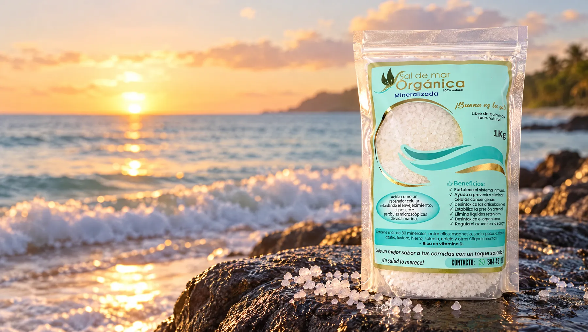
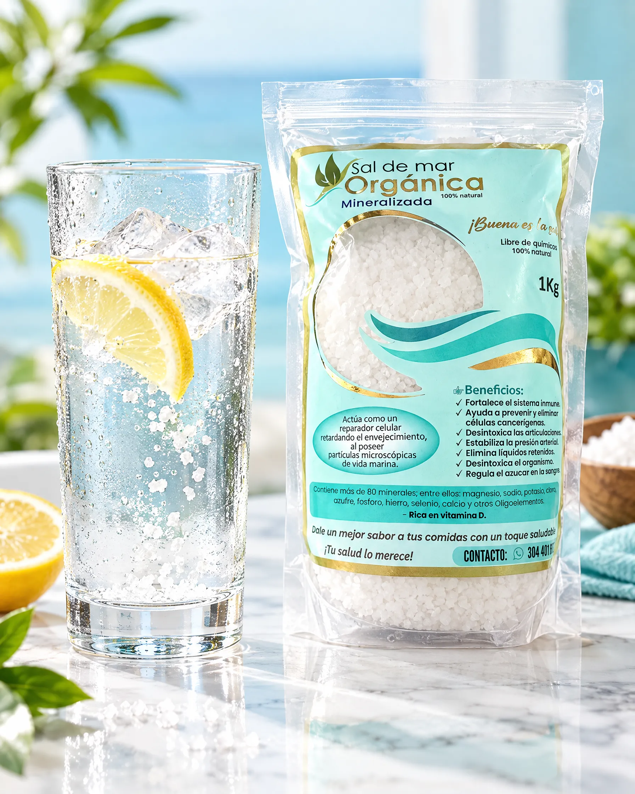
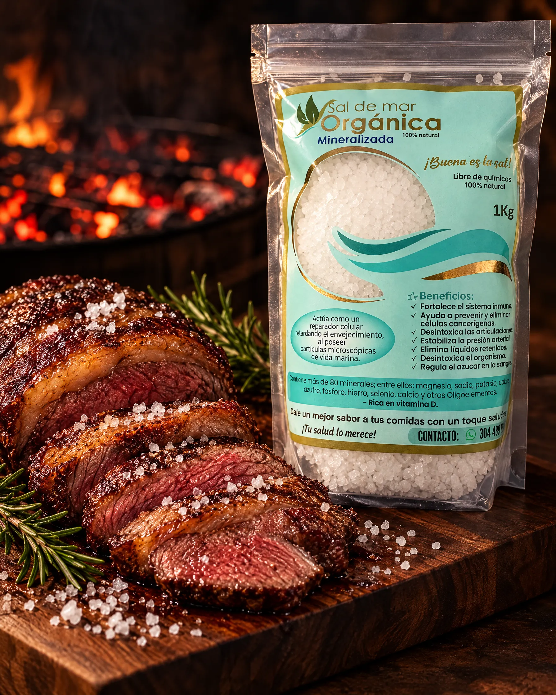

Minerales del mar
Conserva magnesio, potasio, calcio, hierro, selenio y otros oligoelementos naturales del agua de mar.

Sal marina mineralizada, libre de químicos y aditivos. Conserva los minerales que el mar le dio.
La sal de mesa común se lava, se refina y se blanquea hasta quedar casi solo en cloruro de sodio. La nuestra llega a tu cocina como la entrega el mar.
Conserva magnesio, potasio, calcio, hierro, selenio y otros oligoelementos naturales del agua de mar.
Sin refinar, sin blanqueadores, sin antiaglomerantes y sin aditivos. Solo sal de mar.
Su perfil mineral realza el sabor natural de cada preparación. Notarás la diferencia desde el primer plato.

No pasa por lavados ni procesos industriales. Conserva su estructura y su mineralidad natural.

Una pizca en tu agua con limón o en tus preparaciones, como parte de una alimentación consciente.

Sopas, arroces, ensaladas, carnes y pescados: el sabor del mar en cada preparación.

Obtenida por evaporación del agua de mar con sol y viento, el método más antiguo y limpio.

Su grano grueso forma una costra dorada perfecta en carnes, chicharrón y pescado a la brasa.
Empacada en Itagüí, Antioquia
Nuestra sal se obtiene por la evaporación natural del agua de mar, con sol y viento, como se ha hecho por siglos. Luego la seleccionamos y empacamos con cuidado en Itagüí, sin agregarle nada.
La sal de mar sin refinar conserva la riqueza mineral del océano. Estos son algunos de los que contiene de forma natural:
Las dos salan, pero no son lo mismo. Esta es la diferencia.
| Característica | Sal común de mesa | Sal de Mar Orgánica Mineralizada |
|---|---|---|
| Proceso | ✕Refinada industrialmente: lavada, secada a altas temperaturas y molida. | ✓Evaporación natural del agua de mar con sol y viento. Sin refinar. |
| Minerales | ✕Casi 99 % cloruro de sodio; pierde la mayoría de sus minerales. | ✓Conserva magnesio, potasio, calcio y más de 80 minerales y oligoelementos. |
| Aditivos | ✕Antiaglomerantes y otros aditivos para que no se apelmace. | ✓Ninguno. 100 % natural, libre de químicos. |
| Blanqueado | ✕Sí, para lograr un blanco uniforme. | ✓No. Su color y textura son los que le dio el mar. |
| Sabor | ✕Salado plano, a veces con un dejo amargo. | ✓Más completo y redondo: realza el sabor natural de los alimentos. |
| Usos | ✕Principalmente para cocinar. | ✓Cocina, parrilla, agua con limón y baños de sal para tu bienestar. |
Haz tu pedido en segundos por WhatsApp. Los precios no incluyen el envío: te confirmamos su valor y el medio de pago antes de despachar.
Sopas, arroces, granos, guisos y ensaladas. Úsala como tu sal de siempre.
Sella carnes, pollo y pescado con una costra de sabor imposible con sal de mesa.
Una pizca en agua con limón, como parte de tu rutina. Siempre con moderación.


Desde hace siglos el agua de mar se usa para descansar el cuerpo. Lleva esa tradición a tu casa con baños de sal.
Disuelve la sal en la tina con agua tibia y sumérgete unos minutos. Ideal para descansar después de un día largo o de hacer ejercicio.
1 taza (≈ 250 g) · 15 a 20 minutosUna ponchera con agua tibia y sal para consentir tus pies cansados y sentir alivio al final de la jornada.
3 cucharadas · 10 a 15 minutosMezcla la sal con aceite de coco o de oliva y masajea suavemente la piel en la ducha. Deja una sensación suave y renovada.
2 cucharadas de sal + 1 de aceite · 1 vez por semanaUn remedio casero tradicional: disuelve una pizca en un vaso de agua tibia y haz gárgaras.
½ cucharadita en 1 vaso de agua tibiaUso externo y tradicional, como complemento de tu bienestar. No reemplaza tratamientos médicos. Evita aplicarla sobre heridas abiertas o piel irritada, y si tienes una condición de salud consulta a tu médico.
¿No encuentras tu respuesta? Escríbenos y te atendemos personalmente.
Ver todas las preguntas
Una sal como la de los tiempos bíblicos: agua de mar, sol y viento, sin procesos alterados por el hombre. Tenemos precios especiales por volumen para congregaciones, retiros, eventos y actividades de recaudación.
Conocer la propuesta para iglesiasPide hoy tu Sal de Mar Orgánica Mineralizada y recíbela en casa.